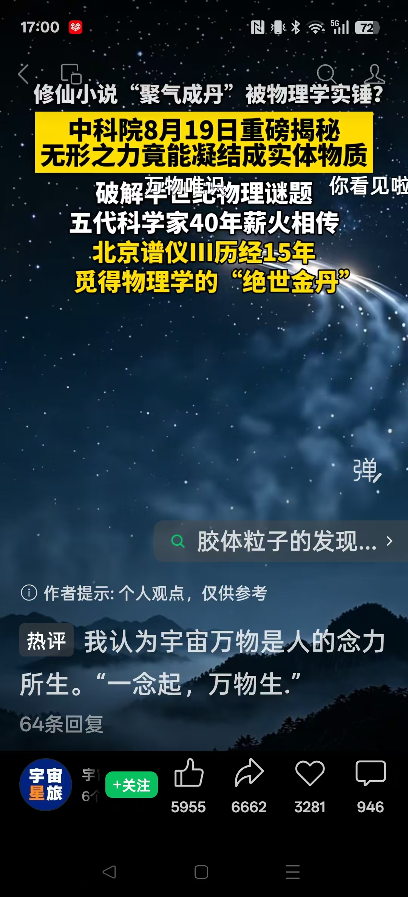
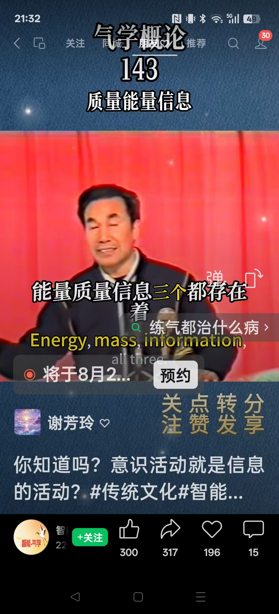
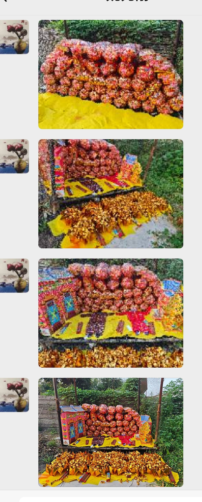
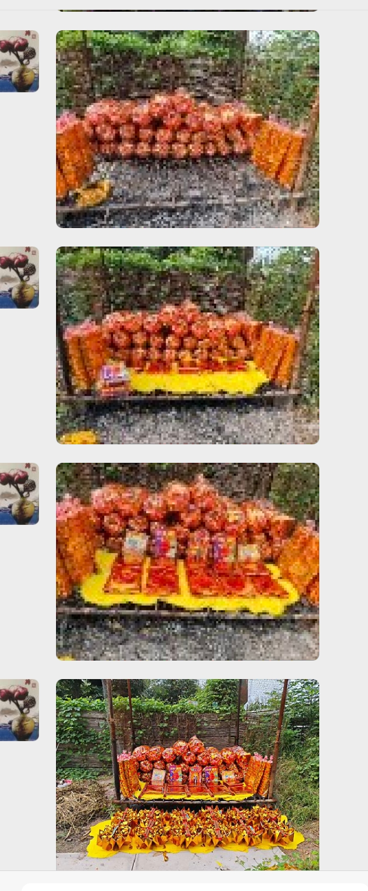
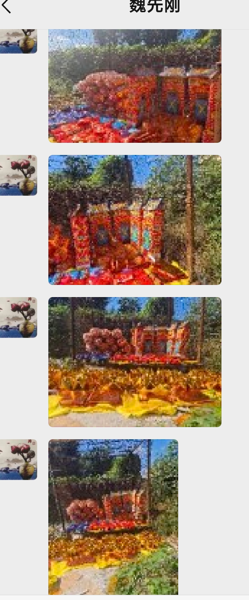

20260822中科院 无形之力 能凝结成实体物质
符咒术法风水布局 原始对话记录第二次念力减肥
杭州回来之后一个月，三公斤没了
不过，饮食有所改变
肉减少了，海鲜多了一点，想吃青菜咸菜，面食
每天能感觉到饿
少喝酒，少吃碳水，尤其晚上少吃点。
[呲牙][呲牙]

[呲牙][呲牙]
我就爱看这种
科学研究证明光转化为实体
力转为实体了
光是不是也可以压缩成气体，液体，固体，等离子体
好像瞬间就没了
[呲牙][呲牙]
四十华严经原来只是华严经的一小部分
只是普贤行愿品
那，六十，八十应该就更精彩了
我感觉有点点事
读完整部经，起码要一年
这是有意要把我封在这部经里
经外，杂金黄一片，
看来是不让我参与这事
问题很严重
杂金黄，刑伤，交战，但不大
我是最不爱管闲事的人
那真有这问题，诸位可要好自为之了
这群能起护卫作用 你偏偏跳出去，
最近国家开始清理各种国学玄学问题了。
[呲牙][呲牙]
谨言慎行，不要接案子了。
打假
打假
抓的可不少啊
不过，真的就是真的
前几天，南方几个搞风水的机构，被审核
一审核，就没打算让他干成
改革也不行
我让他们去研究院学经验
还不去
研究院那是民政部批的
合法的
证书就是合法的
一般机构发的证书，都是水货
不承认
看这个杂金黄，要四五年呢
四五年，一般就清理干干净净的了
[呲牙][呲牙][呲牙]

金光护群[跳跳][发抖][转圈][太阳][太阳][太阳]



每天里，依然做各类阴阳界法事这个属于民俗
"无形之力凝成实体"：一段念力与气光的转述
一、本页是什么
这一页内容较杂，像是随手记下的几条：从"念力减肥"的自述，跳到关于"光与力能否转化为实体"的讨论，再转到读经进度和行业整顿的话题。标题那句"中科院 无形之力 能凝结成实体物质"，是页中转述的一类说法，需谨慎对待。
二、"念力减肥"的记述
页中自述：某次行程回来一个月，"三公斤没了"，同时饮食有所改变——肉减少、海鲜略多，爱吃青菜咸菜面食，每天能感觉饿，并少酒、少碳水、晚上少吃。记录把减重与饮食改变并提。
这里只作转述：减重与健康关系复杂，本站不提供任何减肥或医疗建议，请以医生或营养师的意见为准。
三、"无形之力凝成实体"的说法
页中以"科学研究证明光转化为实体""力转为实体"起头，随后发问："光是不是也可以压缩成气体、液体、固体、等离子体？"并提到南瓜含钴等元素，猜想"意念力是不是也可以合成元素"。
要提醒的是：这些是页面中的说法与联想，本站不把它当科学结论。物理上"力、光能否被压缩成实物"这类命题，应以主流科学的检验为准，不宜据页面口头说法下判断。
四、"杂金黄"与行业整顿
页中用"杂金黄"来描述某段时间的"象"，称其"刑伤、交战，但不大""要四五年"。随后谈到行业环境：称"国家开始清理各种国学玄学问题""打假""南方几个机构被审核"，并主张"谨言慎行，不要接案子"。其中还提到"研究院是民政部批的、证书合法"等语——这些均属页中转述的听闻，本站不对其真实性作背书。
五、常见问题
问："光变实体"可信吗？ 这是本页的说法。本站不作科学结论，也不承诺任何功效；此类命题以主流科学检验为准。
问：靠"念力"能减肥吗？ 页中把减重与饮食改变并提，属个人叙述。健康与体重问题请咨询医生或营养师，不要依赖意念做法。
问：这些记录该怎么看？ 按民俗与修习记录的整理来看，理性对待，不据此做现实决策。
六、提醒
- 本页涉猎很广：念力、光与实体、读经、行业整顿，多为转述与联想；
- "能凝结成实体""合成元素"等说法未获科学证实，不作结论；
- 健康问题请就医；涉及行业与机构的话题，以官方信息为准。